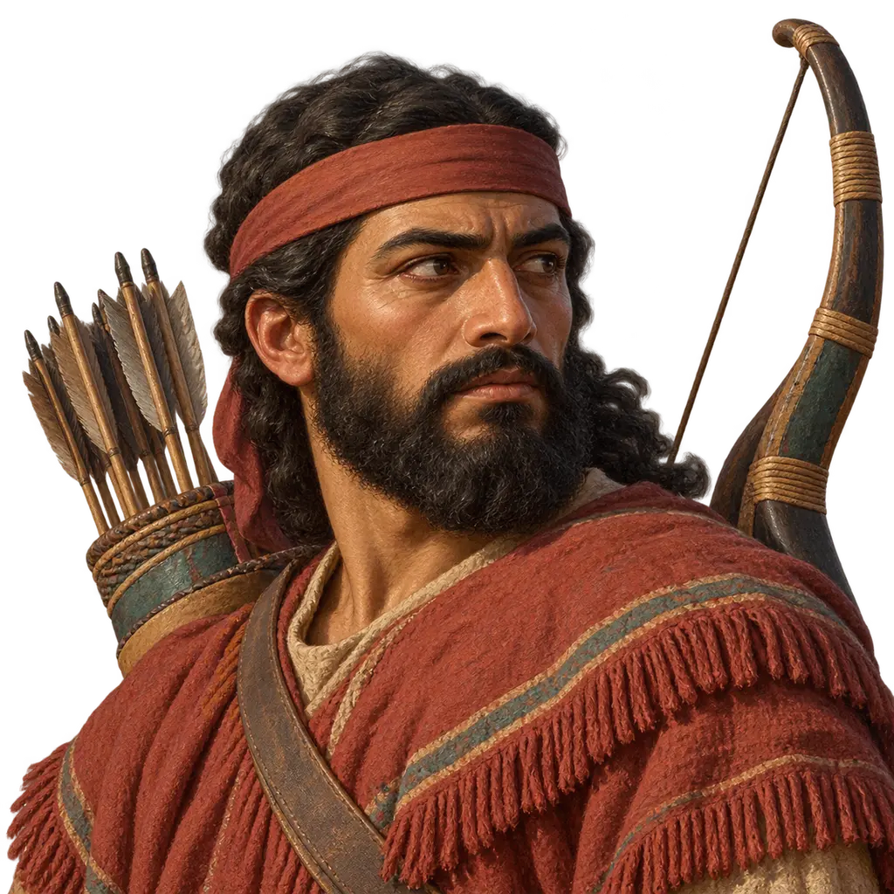
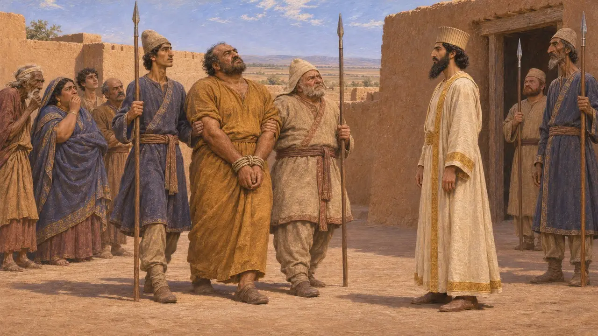
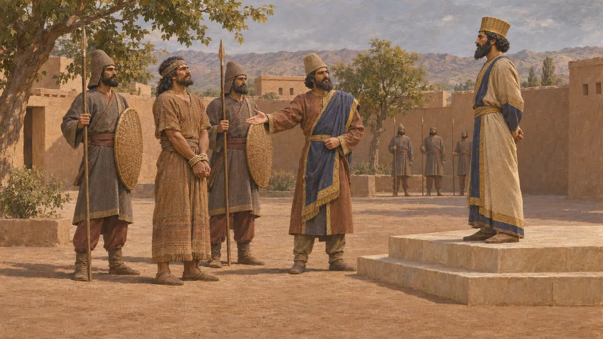
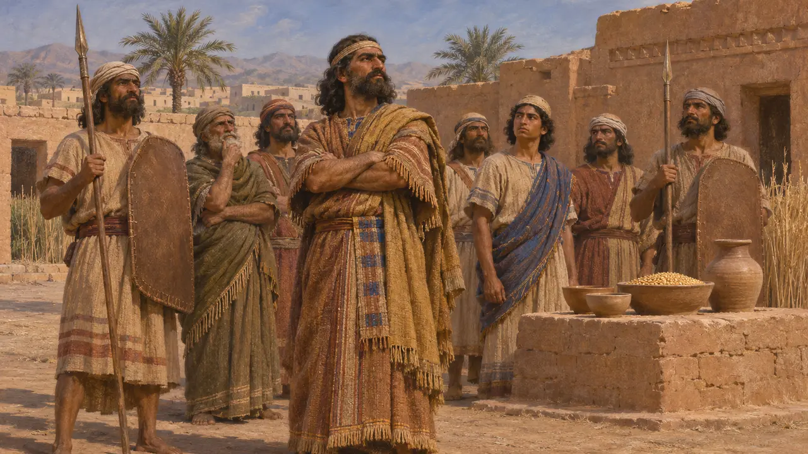
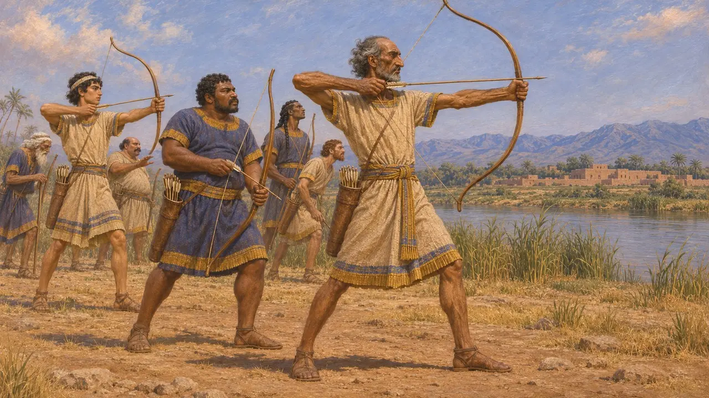
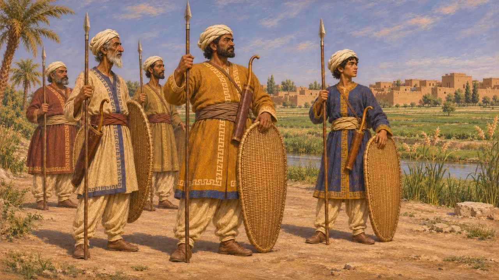

Encyclopedia › Soldiers and ships

Elamite rebels
Risings in Elam against Darius I, recorded at Behistun, 522-519 BCE
In the game: Level 5: The Charter
Elam, the old kingdom of the Susa plain and the hills beyond it, rose against Darius three times in his first years as king. The Behistun inscription names the leaders as Açina, Martiya and Athamaita, and each rising ended with its leader seized and killed. The revolts mattered because Susa, which Darius soon rebuilt as a royal seat, lay at the heart of Elam.
In the game: At Susa the game fields Elamite archers, horse archers, spearmen, captains and Athamaita's Champion. These troop types are the game's own; Behistun names no units and says only that Gobryas's army beat the rebels.

Açina and Martiya, 522-521 BCE
In the recordBehistun says that after Darius killed Gaumata, an Elamite named Açina, son of Upadarma, made himself king in Elam. Darius sent word there, and Açina was brought to him bound and put to death. Soon afterwards Martiya, son of Cincikhri, who lived at Kuganaka in Persis, claimed to be Imanish, king of Elam. The inscription says the Elamites feared Darius, who was nearby, so they seized Martiya and killed him themselves.
DB §§16-17, 22-23

Athamaita and Gobryas, about 520-519 BCE
In the recordA fifth column, added later to the Old Persian text only, records a third rising in Darius's second and third regnal years. The Elamites made Athamaita their chief. Darius sent an army under the Persian Gobryas, who defeated the Elamites, captured Athamaita and brought him to the King, who had him killed. The text then says the province became Darius's again.
DB §71 (column V)

Faithless and without Auramazda
DisputedColumn V says the Elamites were faithless and did not worship Auramazda. Some scholars read this as a religious reason for the war. Others see a formula about loyalty, because Elamite gods received offerings alongside Auramazda in the Persepolis Fortification tablets. It is also unclear who the rebels were. Possibilities include people of the Susa plain, hill peoples, or local lords hoping to revive the old Elamite kingship.
DB §72; W. Henkelman, The Other Gods Who Are, 2008

The bowmen of Elam
In the recordThe game's picture of Elamites as archers has old roots. Assyrian palace reliefs from Nineveh show Elamite bowmen at Ashurbanipal's battle of Til-Tuba, more than a century before Darius. Behistun itself says nothing about how the rebels of Darius's time fought or what weapons they carried.
Til-Tuba reliefs, South-West Palace, Nineveh (British Museum)

Elam inside the empire
Ancient accountHerodotus places Susa and the Cissians in the eighth tax district, paying 300 talents of silver a year. Cissians was his name for the people of the Susa plain. In his list of Xerxes' army he describes Cissian foot soldiers equipped like Persians but wearing turbans. He says nothing about the Elamite revolts against Darius.
Herodotus 3.91; 7.62
Sources
- DB §§16-17, 22-23, 71-72
- R. Kent, Old Persian: Grammar, Texts, Lexicon, 1953
- P. Briant, From Cyrus to Alexander, 2002
- W. Henkelman, The Other Gods Who Are, 2008
- A. Kuhrt, The Persian Empire, 2007
- Herodotus 3.91; 7.62